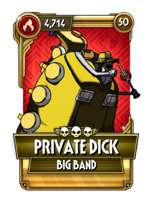

고유 능력 1: 공격 시, 5% 확률로 상대를 3초 동안 기절시킵니다.
고유 능력 2: 해로운 효과에 대한 저항이 50% 증가합니다.
컬러링은 딕 트레이시의 패러디. 고유 능력 1은 확률이 낮은 편이지만 빅 밴드가 워낙 타수가 많다 보니 그럭저럭 걸리는 편이다. 비슷한 능력을 가진 필리아의 패러사이트 위브와 비교하면 자력으로 확률을 늘릴 수 없는 대신 잡기 등 모든 판정의 공격에 능력이 적용된다는 차이가 있다. 고유 능력 2는 모든 해로운 효과에 대한 저항력을 높이는 것으로, 심지어는 파멸처럼 기술 옵션으로 저항을 높일 수 없는 디버프마저 저항을 띄운다. 딜 관련 고유 능력은 없기 때문에 디버프 의존도가 높은 스킨의 카운터로서 방덱에 집어넣어 쓰는 경우가 대부분이고, 그밖에는 디버프가 짜증나는 현상금 등에 간혹 기용하는 정도.